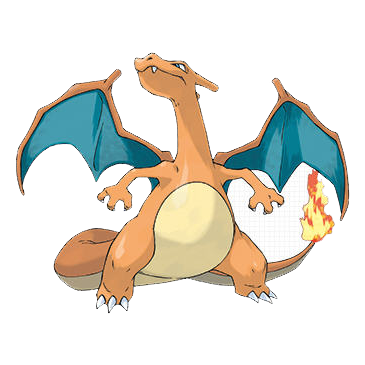

<!DOCTYPE html>
<html lang="en">
<head>
    <meta charset="UTF-8">
    <title>switch</title>
    <script type="text/javascript">
        input=prompt("다음의 숫자를 입력하세요.","1 또는 2 또는 3");
        switch(input){
            case "1" : document.write("");bread;
            case "2" : document.write("");bread;
            case "3" : document.write("");bread;
            default :alert("잘못 입력 하였습니다.")
            }
    </script>
</head>
<body>

</body>
</html>